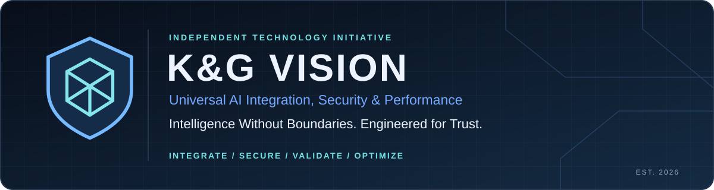

01 / DATA ANALYTICS
Indicadores de manutenção
Estruturação de registros e indicadores operacionais com SQL e Python, a partir de dados demonstrativos.
Explorar projeto ↗Conecto dados, processos e tecnologia para transformar desafios de negócio em soluções práticas.
Experiência em governança de dados, operações e automação. Estudante de Engenharia de Produção e idealizador da K&G Vision, com interesse em engenharia de dados e IA aplicada.
Uma seleção de projetos independentes que demonstra como aplico análise, automação e experimentação técnica. Os diagramas são ilustrações conceituais; os repositórios contêm a documentação dos projetos.
Estruturação de registros e indicadores operacionais com SQL e Python, a partir de dados demonstrativos.
Explorar projeto ↗Normalização de identificadores e integração com APIs para reduzir etapas manuais de consulta.
Explorar projeto ↗Exercício de aprendizado guiado com Python, Streamlit e integração de modelo de linguagem por API.
Explorar projeto ↗Minha trajetória começou em operações industriais, onde aprendi a importância da qualidade, da rastreabilidade e dos processos bem estruturados. A experiência com propostas técnicas e análise de custos ampliou minha visão sobre como decisões de engenharia afetam o negócio.
Hoje, direciono essa experiência para governança de dados, automação e inteligência de processos. Gosto de investigar problemas, organizar informações e desenvolver soluções que façam sentido para quem precisa utilizá-las.
Como estudante de Engenharia de Produção, continuo aprofundando fundamentos de programação, engenharia de dados e IA aplicada. A K&G Vision é meu ambiente independente de pesquisa e experimentação.
Experiências que conectam o ambiente industrial, as decisões de custos e a qualidade da informação.
Dados comerciais e inteligência de processos
Atuação na organização de dados de CRM e na melhoria de fluxos de trabalho, conectando qualidade da informação e necessidades operacionais.
Engenharia de serviços e custos
Experiência na interface entre equipes comerciais e técnicas, apoiando a elaboração de propostas e a organização de informações para serviços HVAC.
Operações industriais · 2024
Experiência em ambiente de produção industrial, com atenção à rastreabilidade, organização de informações e melhoria contínua.
As experiências descrevem responsabilidades profissionais, sem exposição de dados internos ou afirmações de impacto quantitativo não comprovado.
Competências construídas na experiência profissional e em projetos independentes de aprendizado. Cada área aponta para uma demonstração pública relacionada, não para entregas internas de empregadores.
Organização de bases, consultas, relatórios e indicadores para tornar informações úteis à tomada de decisão.
Ver projeto relacionado ↗Redução de etapas repetitivas por meio de fluxos, integração de sistemas e regras de tratamento de dados.
Ver projeto relacionado ↗Entendimento de processos, custos, priorização de demandas, documentação e melhoria contínua.
Ver projeto relacionado ↗Prática de desenvolvimento de protótipos e estudos em engenharia de dados, integração de LLMs e segurança de IA.
Ver projeto relacionado ↗Graduação em andamento. Previsão de conclusão: dezembro de 2027.
Formação técnica em química industrial, com base em processos e qualidade.
Estudos em Python, engenharia de dados e inteligência artificial. Português nativo, inglês C1 e espanhol B1 (níveis informados).
Projetos independentes de dados, automação, operações e desenvolvimento. Explore as tecnologias, as abordagens e o código-fonte. São demonstrações, especificações ou exercícios de aprendizado; não representam resultados corporativos verificados nem implantação em produção.
Organização de registros e indicadores de manutenção para apoiar decisões operacionais.
Investigar qualidade dos registros e estruturar indicadores; dados demonstrativos.
Normalização de CNPJ e integração com fontes de consulta alternativas.
Padronizar identificadores, consultar APIs e considerar falhas de integração.
Estruturação de cálculos de custos e markup para apoiar propostas.
Separar custos e regras de precificação para tornar o cálculo consistente.
Modelagem de fluxos de integração de CRM por eventos.
Considerar transferência de dados, falhas e regras de integração.
Aplicação full stack local para organização de demandas.
Estruturar interface e persistência de dados para organizar solicitações.
Regras de pontuação e SLA para apoiar decisões de prioridade.
Aplicar critérios de negócio de maneira consistente à ordenação de solicitações.
Exercício de integração de modelos de linguagem em uma interface de aplicação.
Explorar integração por API e interação com modelos de linguagem; projeto de aprendizado.
Experimente outra palavra-chave ou limpe os filtros.
Experimente cinco ferramentas de análise, custos, priorização, qualidade de dados e automação. As demonstrações usam dados fictícios e executam os cálculos localmente no navegador.

Meu espaço de pesquisa, aprendizado e desenvolvimento tecnológico reúne Genesis, Rubedo, Argus, Aeris e Lilium. Uma iniciativa independente, ainda não constituída como empresa, sem oferta comercial atual.
Conhecer K&G Vision ↗Aberto a oportunidades júnior em dados, BI, automação e operações, especialmente remotas ou híbridas, e a conversas sobre projetos de tecnologia.